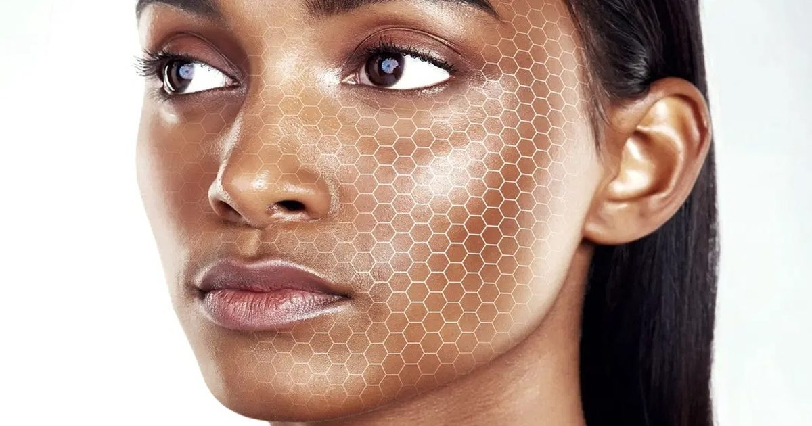

Thea Care: ИИ, созданный дерматологами, сокращает пробел в рекомендациях по уходу за кожей
Покупатель нажимает на рекламу средств по уходу за кожей, попадает на страницу с 40 товарами и не у кого спросить.
Большинство уходит из магазина без покупки.
Те, кто покупает, выбирают один продукт вместо рутины, и если он неправильный, они не возвращаются.
Thea Care, берлинская компания, предоставляет брендам по уходу за кожей то, чего не хватает их интернет-магазину: дерматологический ИИ-анализ кожи, который работает под собственным именем бренда.
Три способа, которыми бренды ПО уходу ЗА кожей теряют продажи онлайн